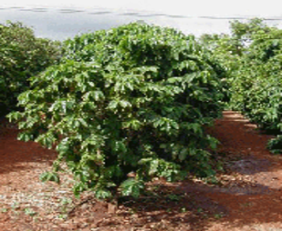
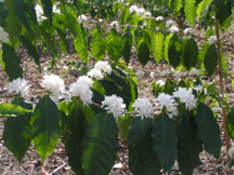
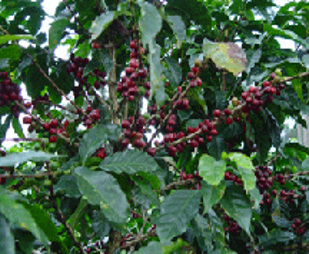

ประวัติ
เชื่อกันว่ากาแฟถูกค้นพบครั้งแรกโดยเด็กเลี้ยงแพะชาวอาบิสซีเนีย (ประเทศเอธิโอเปียในปัจจุบัน) ชื่อคาลดี จากการสังเกตพบว่า แพะดูกระปรี้กระเปร่าขึ้นเมื่อกินผลไม้สีแดงของต้นไม้ต้นหนึ่ง ซึ่งก็คือต้นกาแฟนั่นเอง ในช่วงก่อนศตวรรษที่ 16 กาแฟถูกปลูกโดยชาวอาหรับเท่านั้น คำว่ากาแฟ เป็นคำที่มาจากคำว่า "เกาะหุวะหุ" ในภาษาอาหรับ แล้วเพี้ยนเป็น กาห์เวห์ ในภาษาตุรกี ก่อนที่จะกลายเป็น คอฟฟี่ ในภาษาอังกฤษ และกาแฟ ในภาษาไทย ชาวอาหรับหวงแหนพันธุ์กาแฟมาก จึงส่งออกเฉพาะเมล็ดกาแฟที่คั่วสุกแล้วเท่านั้น ต้นกาแฟถูกนำไปอย่างยากลำบาก โดยทหารเรือฝรั่งเศสในต้นศตวรรษที่ 18 ในครั้งแรกนั้น มีต้นกาแฟที่เหลือรอดชีวิตบนเรือมาขึ้นฝั่งอเมริกาได้เพียง 1 ต้น และก็ได้แพร่ขยายเพิ่มขึ้น จนปัจจุบันดินแดนแห่งนี้ ได้กลายเป็นดินแดนที่ปลูกกาแฟมากที่สุดในโลก


